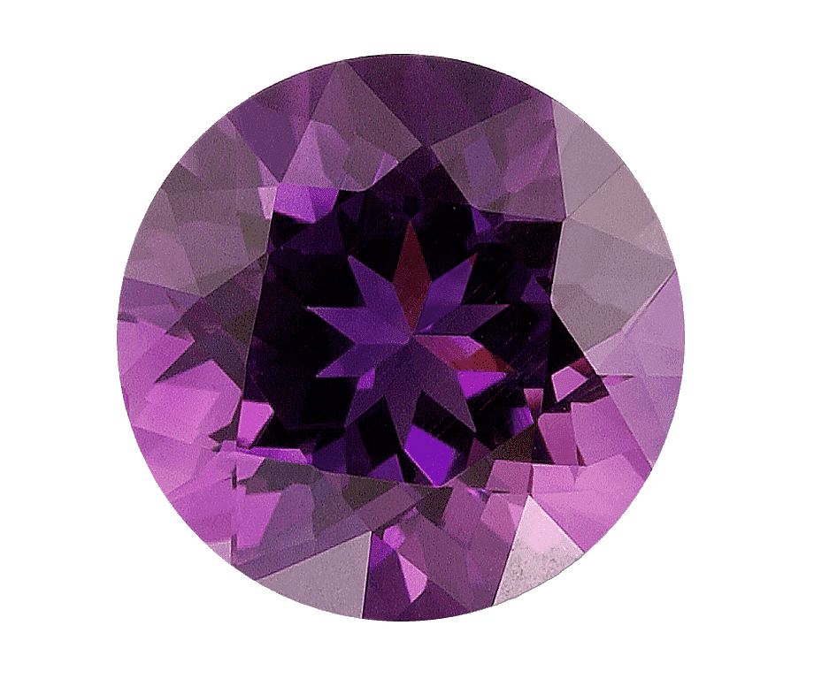
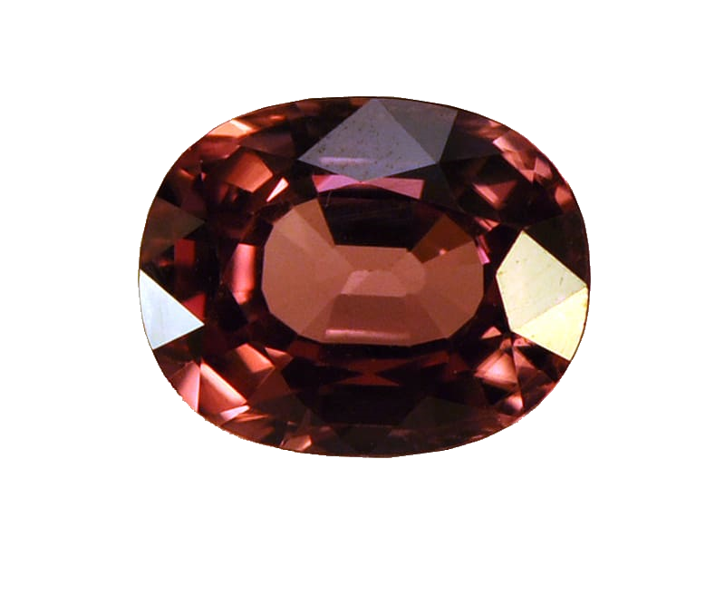
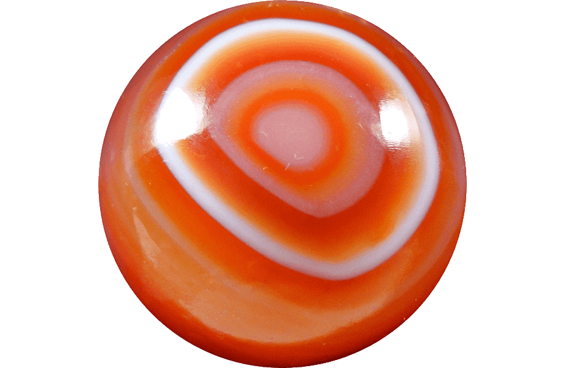
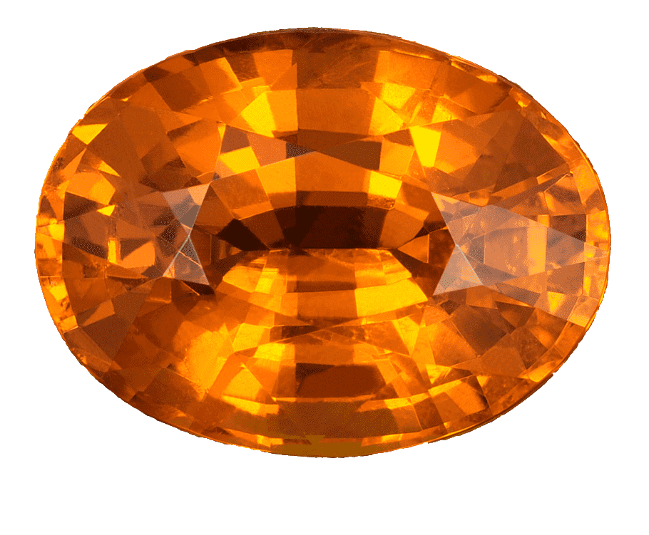
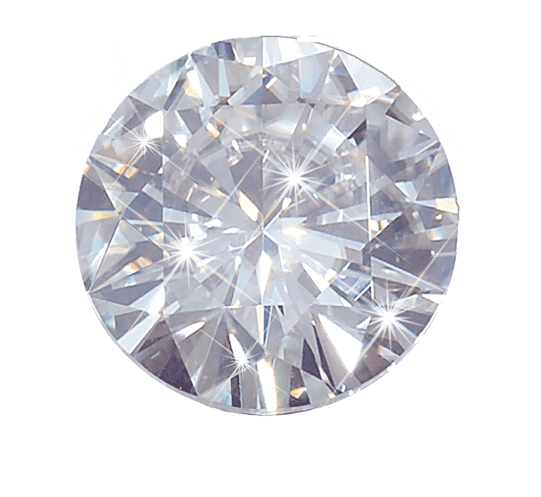
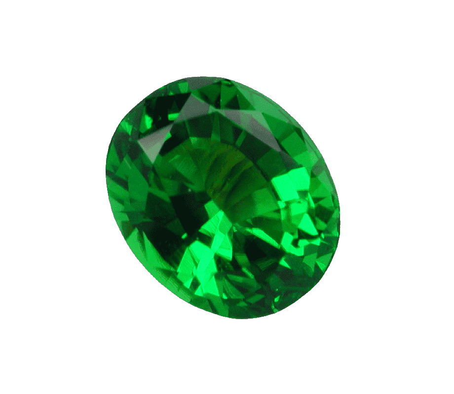
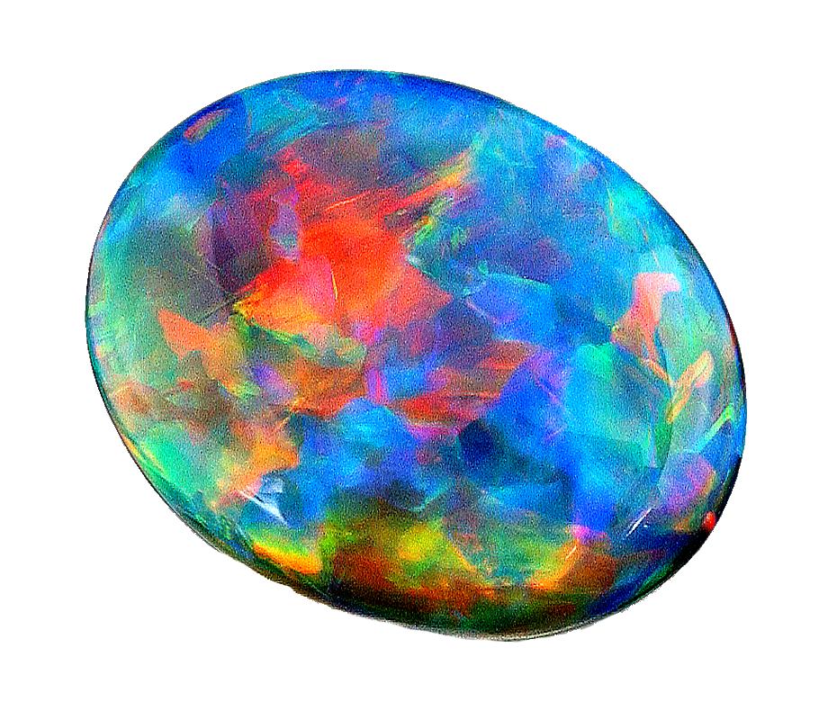
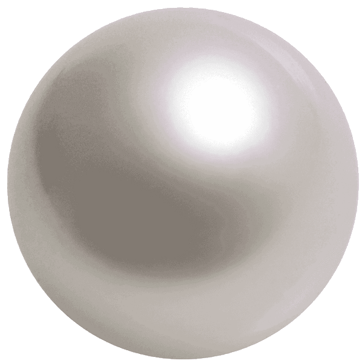
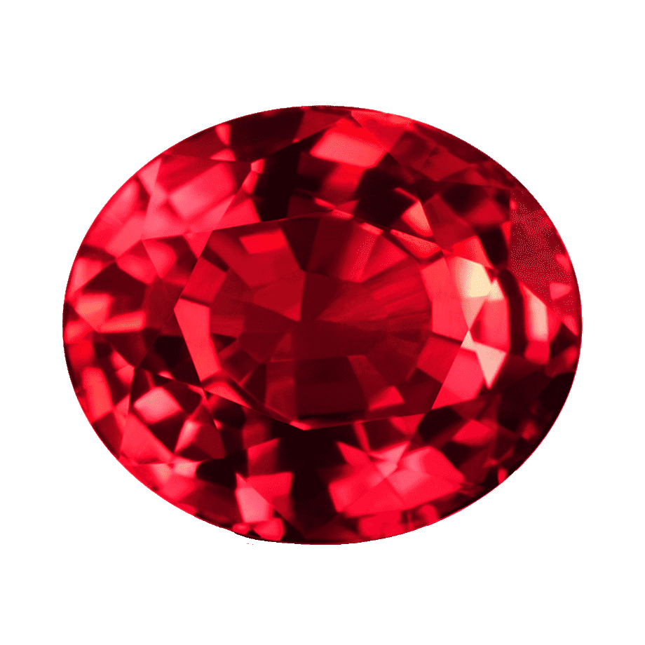
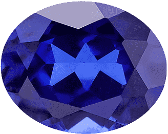

Амети́ст (др.-греч. αμέθυστος, от α- «не» + μέθυστος «быть пьяным») — синяя, синевато-розовая или красно-фиолетовая разновидность кварца. Прозрачный аметист относится к полудрагоценным камням. Непрозрачный — ценный поделочный камень. Весьма высоко ценится как коллекционный минерал. Встречается обычно в виде свободно сидящих в пустотах и жилах среди кристаллических горных пород кристаллов и их сростков. Кристаллы образованы комбинацией плоскостей призмы и ромбоэдра, причём из всех кварцев именно для аметиста характерной чертой является преобладание граней ромбоэдра. Реже кристаллы имеют длиннопризматический или скипетровидный облик. Обычен в друзах и кристаллических щётках внутри агатовых жеод и в миндалинах и трещинах вулканических пород.

Альмандин — самая твёрдая и самая распространённая разновидность красных или красно-фиолетовых гранатов. Цвет альмандинов может быть вишнёвым, малиновым, фиолетовым и буро-красным. Редко встречаются почти чёрные альмандины. Интенсивность оттенка зависит от количества соединений железа. Большей твёрдостью от альмандинов отличаются лишь похожие на них по окраске рубины. Название минерала является искажённым словом «Алабанда» — так в Малой Азии назывался город, где издавна гранились эти камни. По другой версии, местечко Алабанда было лишь перевалочным пунктом древних торговых путей. Ювелирными камнями считаются только прозрачные альмандины, стоимость которых превышает стоимость пиропов

Ага́т — минерал, кремнезём, скрытокристаллическая разновидность кварца, SiO2. Представляет собой тонковолокнистый агрегат халцедона со слоистой текстурой и полосчатым распределением окраски. Ювелиры называют агатом также разновидности халцедона без явной слоистости, но с различными включениями, создающими конкретный рисунок: «моховой агат», «агат звёздчатый» и другие, однако эти названия являются только торговыми и в научной среде не поддерживаются.

Янта́рь — окаменевшая ископаемая смола, затвердевшая живица древнейших хвойных деревьев верхнемелового и палеогенового периодов. Используется в основном для изготовления ювелирных и галантерейных изделий, бижутерии.

Алма́з (от др.-греч. ἀδάμας «несокрушимый», через араб. ألماس [’almās] и тур. elmas) — минерал, кубическая аллотропная форма углерода[1]. При нормальных условиях метастабилен, то есть может существовать неограниченно долго. В вакууме или в инертном газе при повышенных температурах постепенно переходит в графит. Самый твёрдый по шкале эталонных минералов твёрдости Мооса.

Изумру́д (устар. смарагд от лат. smaragdus (из греч. σμάραγδος)) — минерал, драгоценный камень берилловой группы. Согласно классификации Ферсмана изумруд, наравне с алмазом, сапфиром, рубином, хризобериллом, александритом, благородной шпинелью и эвклазом, относится к самоцветным камням первого порядка.
Главными критериями качества изумруда являются его цвет, и затем — прозрачность. Идеальный изумруд — прозрачный камень равномерно распределённого насыщенного цвета. Крупные бездефектные изумруды густого тона весом от 5 карат ценятся дороже алмазов.

Опа́л (от санскр. उपलः [upalaḥ] «камень» через др.-греч. ὀπάλλιος и лат. ораlus) — минералоид, аморфный кремнезём SiO2·nH2O (гидрат диоксида кремния), широко используемый в ювелирном деле

Же́мчуг — биогенное твёрдое, округлое или неправильной формы образование, извлекаемое из раковин некоторых морских и речных моллюсков. Образование жемчуга является защитной реакцией организма моллюска на любое инородное тело, попавшее в мантию или между мантией и раковиной[1]. Согласно современной номенклатуре минералов, утверждённой ММА, жемчуг не относится к минералам, но при этом он содержит в своём составе минерал арагонит. Ценится как драгоценный камень и используется для производства ювелирных изделий.

Руби́н (лат. rubens, rubinus — красный; устар. сардис, лал, красный яхонт), Al2O3 — минерал, разновидность корунда, относится к классу оксидов, тригональная сингония, драгоценный камень красного цвета.

Сапфи́р (от др.-греч. σάπφειρος (sappheiros) — синий камень, возможно от ивр. ספּיר (sapir) или персидского названия с тем же значением) — драгоценный камень различных оттенков, одна из разновидностей корунда[1]. В минералогии сапфирами называются корунды исключительно синего цвета, в ювелирной промышленности — любых цветов, кроме сиренево-красного (такие камни называются рубинами). Синий окрас сапфира обуславливается присутствием примесей титана (Ti) и железа (Fe). В старину в России сапфир (или сафир[2]), как и другие ценные минералы синей окраски, назывался баусом.
Существуют синтетические сапфиры, широко используемые в технике и ювелирном деле. Синтезируют как оптически прозрачные бесцветные химически чистые сапфиры (лейкосапфиры), так и окрашенные разнообразными примесями[3]. Искусственные сапфиры были впервые синтезированы в 1904 году французским химиком Огюстом Вернеем (англ.)русск.[4].
Сапфир является оксидом алюминия (химическая формула Al2O3)